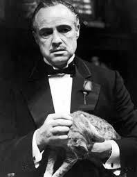

-
Vito Corleone:
Vito es un líder de la mafia por naturaleza, con la capacidad de manipular la psicología de sus
adversarios y de reclutar nuevos aliados.10 A su lado sus socios son su pálido reflejo, parecen
crueles, nimios, o triviales y brutos. Aun su hijo Michael, el más allegado, con sus tremendos
éxitos, no sale bien parado de dicha comparación, ya que le falta calidez y alegría por vivir.
Tal vez como dijo Sollozzo refiriéndose a Vito, «el viejo se está reblandeciendo» y aún si eso
fuese cierto y solo sobrevive por pura casualidad al ataque de un asesino; posee toda la
prestancia para ser El padrino. Es sabio, inteligente, cognitivo, y mediante su elocuencia es
capaz de convencer sin necesidad de balas. Su personal estilo de vida, el cual es su virtud más
destacada, eclipsa a su hijo. Aunque es un criminal rudo y violento, también es un padre tierno
y un esposo afectuoso. Su ternura es la paradoja que convierte a su personaje en un ser
excepcional.
En sus últimos años aparece relajado, juguetón y hasta risueño. Ha tenido una vida rica y plena,
ganándose un retiro en calma. En su juventud, cuando es representado por Robert De Niro, es
afectuoso y atento, pero también callado e intenso. A diferencia de Michael, no deja que esa
intensidad lo consuma. Nunca se siente en conflicto por las dos acepciones de "familia" —la de
la sangre y la del crimen—, y nunca se siente atribulado por sus actividades. Solo se sintió
apenado cuando Michael asesinó a Sollozo. Es un hombre trabajador, aunque al final del día
encuentra la oportunidad para pasar un rato en compañía de su familia. En resumen, es descrito
como un padre ejemplar y un Padrino ideal, lo que lo convierte en un modelo difícil de imitar
por sus hijos.

-
Michael Corleone:
Michael es el hijo de Don Vito Corleone, el jefe de la familia Corleone, una familia dedicada al
crimen organizado. Michael al principio del relato es un joven universitario bajo los estímulos
de su padre, ya que este desea un gran futuro laboral para su hijo. Pero Michael decide
contradecir los planes que su padre tenía preparados para él y decide alistarse en el Ejército
de los Estados Unidos. Su familia, a pesar de estar muy descontenta con la decisión de Michael,
continúa apoyándole con la esperanza de que cuando Michael acabara el servicio militar,
continuase con sus estudios. Sin embargo, poco después de que acabe su carrera militar, su padre
es tiroteado por unos enemigos de una familia rival de los Corleone. Entonces Michael decide
vengarse de los que intentaron asesinar a su padre y asesina a Sollozzo y al capitán McCluskey.
Debido a ello, tiene que escapar del país durante casi un año para que la familia Tattaglia no
atente contra él como venganza. Una vez todo solucionado, Michael vuelve a casa y se convierte
en el jefe de los Corleone. Se casa con Kay Adams, con la que tendrá dos hijos: Anthony y Mary.
Poco después de la muerte de su padre decide trasladar todos sus negocios a Las Vegas y allí
multiplica los beneficios de la familia. En el año 1979, junto con la Iglesia, organiza una
asociación destinada a aliviar la pobreza del mundo (especialmente en Sicilia). La asociación se
llamaría Fundación Corleone, y Michael decidió donar una gran cantidad de dinero a la Iglesia
con la esperanza de aportar a la ayuda de las familias pobres. Todas estas obras caritativas se
debían a que Michael se arrepentía de sus numerables pecados como jefe de una organización
criminal. Entonces creía que ayudando a la humanidad, aliviaría sus remordimientos. Michael
llevó sus últimos negocios junto con el Vaticano y vendió todos los hoteles y casinos que había
levantado en Las Vegas años atrás. Su hija Mary es asesinada y Michael se traslada a Sicilia a
vivir, donde fallecería años después debido a su diabetes, que le había acompañado casi toda la
vida.
-
Sonny Corleone:
Sonny es el primer hijo de don Vito y Carmella Corleone, y hermano mayor de Fredo, Michael y
Connie. Sonny es duro, valiente, impulsivo y mujeriego; al final de su educación secundaria
abandonó la escuela y se dedicó a los asuntos y negocios familiares, dirigiéndose a su padre de
una manera que dice: "Yo vi como mataste a Fanucci y vi como tiraste la pistola, sere la próxima
cabeza de la familia y tendre un lugar". Configurándose como la persona llamada a suceder a su
padre al frente de la familia. De pequeño encontró a Tom Hagen, un pequeño huérfano de su
barrio, y convenció a su padre para que viviera con ellos. Así, Tom se convirtió en un hijo más
de la familia.
En El Padrino se ve a Sonny como el underboss de la familia. Durante la boda de su hermana se ve
que ya está casado. También se sabe que tiene amantes (hasta su esposa lo sabe). Una de sus
amantes más destacadas es Lucy Mancini, que tiene un leve protagonismo en la novela y quien es
la madre del sucesor de Michael en la tercera película. De hecho, en la primera película se la
muestra manteniendo relaciones sexuales con Sonny.
Santino sería el sucesor digno de un hombre como don Vito, por su carácter duro y su fuerza
física y, de hecho, ocuparía temporalmente el punto más alto de la familia Corleone desde el
primer ataque a Vito Corleone, a finales de 1945.
En el 46, Santino propone una cena con Virgil Sollozzo en la cual se negociaría una tregua y a
la que enviaría a su propio hermano, Michael. Sin embargo, esa negociación era una mera excusa
para que Michael disparase y matase a Sollozzo y a su policía a sueldo personal.